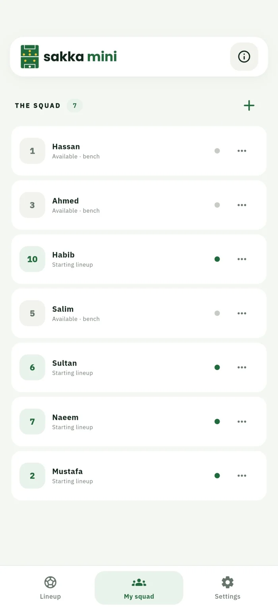
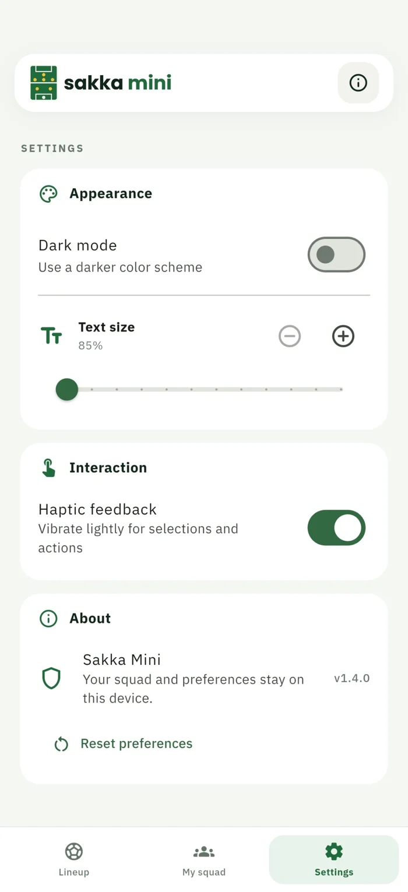
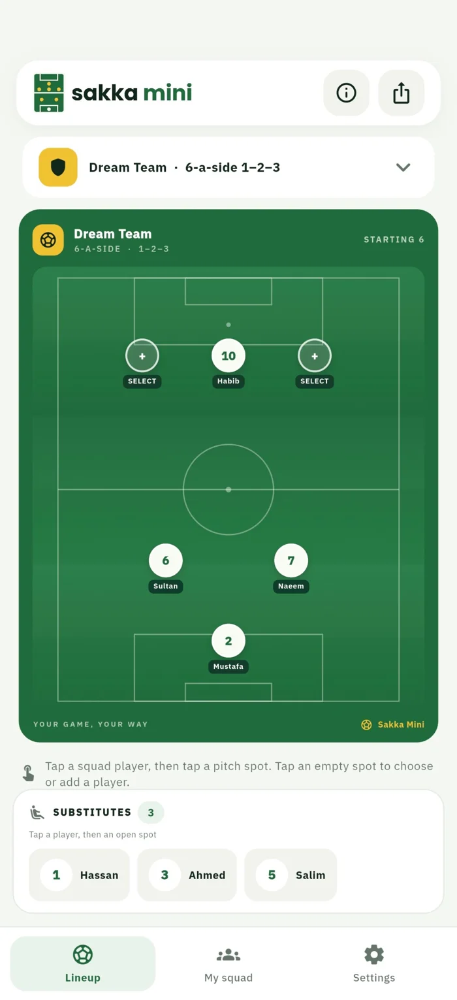

Free for Android
Your game, your way.
Add your players, pick a formation and set the lineup in seconds. Then share it as an image with your team.



Add your players, pick a formation and set the lineup in seconds. Then share it as an image with your team.



Sakka Mini does one job and does it quickly, even with no signal at the pitch.
Choose a formation for your match size and the pitch updates instantly.
Add and edit players with their shirt numbers. Mark who starts and who waits on the bench.
Send the lineup to WhatsApp or any app from the header, on every tab.
No account and no sign-in. Your squad and settings stay on your phone.
Switch themes, resize the text and turn haptic feedback on or off.
Tap a player, then tap a spot on the pitch. Subs wait below.
Every player with number, status and quick actions.
Dark mode, text size, haptics and a one-tap reset.
Free on Google Play. No account needed.